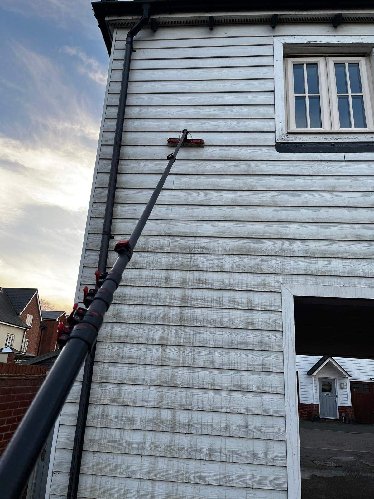
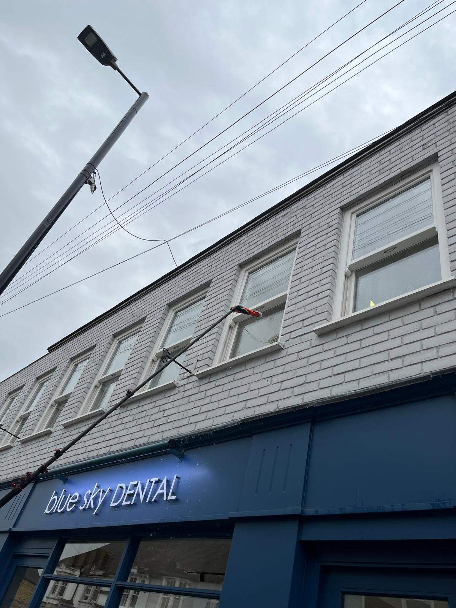
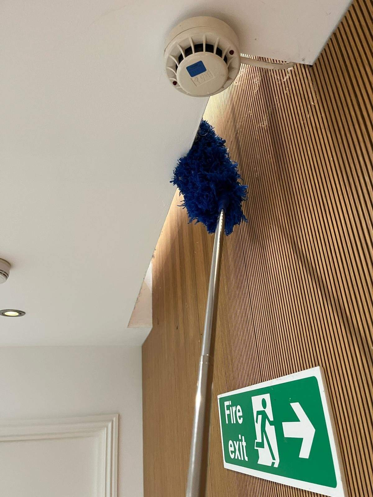
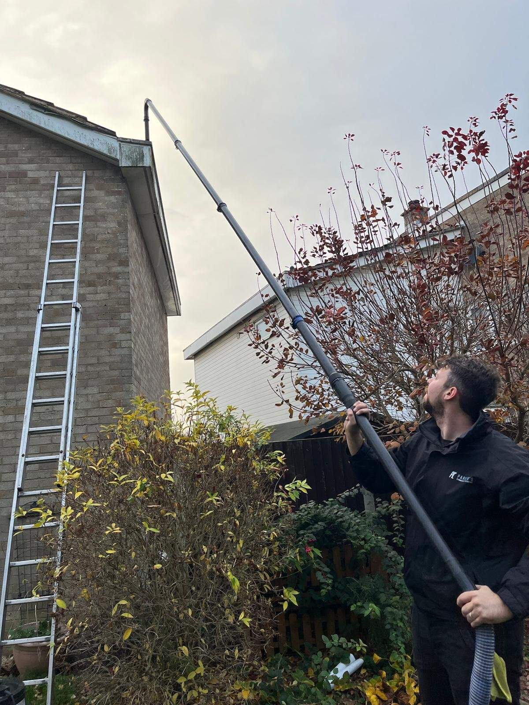
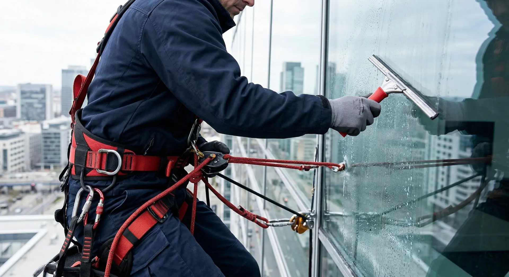

High-Level & Cladding
Specialist Access Solutions
Specialist Access Solutions
The exterior of your facility is the physical embodiment of your corporate identity. Over time, environmental pollutants, algae growth, and heavy traffic film severely degrade building facades, glass, and cladding, impacting your image and slowly corroding the building's substrate.
We deploy highly trained, IPAF-certified operators utilizing state-of-the-art access equipment to restore and preserve your building fabric. From high-reach water-fed pole systems for multi-story glazing to MEWP access for industrial cladding, we execute complex exterior cleaning safely and efficiently.
Deploying the right equipment and expertise to handle any architectural or structural challenge.

Specialist cleaning of aluminum, steel, and composite cladding. We remove biological growth, carbon deposits, and oxidation to restore original structural aesthetics.

Utilizing advanced high-reach water-fed pole systems. We use purified, de-ionized water to deliver a flawless, streak-free finish without the need for ladders.

Specialist interior cleaning for warehouses and atriums, safely removing hazardous dust and debris from high structural beams, HVAC ductwork, and lighting rigs.

High-powered, ground-operated vacuum systems equipped with camera technology to safely clear blockages from commercial guttering, preventing serious water damage.

For complex architectural designs, we deploy Mobile Elevating Work Platforms (cherry pickers and scissor lifts) operated strictly by highly trained, certified personnel.

For extreme heights or areas inaccessible by MEWPs, our IRATA-certified rope access teams provide discreet, safe, and highly effective facade cleaning solutions.
Working at height demands zero margin for error. Our high-level cleaning division operates under strict adherence to HSE regulations, ensuring risk-free execution on every project.
All high-level operatives carry valid certifications for the safe assembly of mobile access towers and the operation of powered access equipment.
We provide comprehensive, site-specific Risk Assessments and Method Statements before a single piece of equipment is deployed.
Strict ground-level safety perimeters and out-of-hours scheduling are utilized to protect the public and ensure zero disruption to your daily operations.
Our operations are fully backed by comprehensive public and employer liability insurance explicitly covering high-level specialist access.
Restore and protect the value of your commercial property. Contact us today to arrange a full site survey and receive a detailed, competitive proposal for your high-level maintenance needs.
Request Site Survey